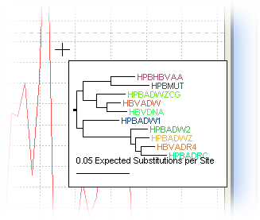

What's New in TOPALi v2
TOPALi v2 is an ongoing project, and as such the software is updated often. Below is a list of new or interesting features that have been added to the application in recent days, weeks, months...
To get a full overview of the changes between the versions, you can view the full TOPALi version history from the subversion server.
New since version 2.16
Print previewsSee what you'll get, before hitting the "Print" button.
Mouse over highlighting
The sequence and position is now highlighted, as you move your mouse across the alignment. You can highlight regions and select the according sequences or add the according position as partition. This feature is also used during VAMSAS sessions to synchronize alignment views between different application.
Positive Selection analysis
TOPALi now provides a intuitive interface to CodeML (part of PAML), making positive selection analysis much more convenient.
New tree estimation methods
The Jukes-Cantor model for quick tree estimation was replaced with the more sophisticated F84+Gamma model. TOPALi also offers different tree estimation methods, like Maximum Liklihood (using PhyML) or bayesian tree estimation (using MrBayes), where also allows further tuning of the tree-creation parameters.
Nucleotide/Aminoacid Substitution Model selection
To find out which substitution model your alignment fits best, TOPALi now offers model testing using Modelgenerator.
Ancestral sequence estimation
In order to estimate ancestral sequences, you can now run FastML's ancestral sequence estimation directly from a tree created in TOPALi.
Codon Usage Check
For many analyses it is important to check the codon usage beforehand. Therefore you can now launch CodonW from within TOPALi.

VAMSAS support
TOPALi now mostly supports the VAMSAS API, which enables different bioinformatics applications to work together. Currently Jalview and VAMAV support VAMSAS.
Cluster queue monitoring
TOPALi's monitoring of the cluster where your job has been submitted now shows how many jobs are in the queue in front of you.
New since version 2.15 and earlier
New and improved graphical user interface
TOPALi v2 sports an entirely new graphical user interface that has been redesigned from scratch to improve upon the original TOPALi's interface. On Windows, the interface blends in with Office using the Office Look and Feel, while on Unix or Linux the popular JGoodies "Looks" is used.


Work with multiple, multiple alignments
A TOPALi project can now import and deal with as many DNA/Protein alignments as your PC has memory for. Each alignment in listed in a new "tree" view down the left-hand side of the screen, along with all the analysis results that relate to that dataset.

XML based project structure
TOPALi now uses a XML based structure for its project files (which are stored compressed), allowing for better compatibility with other programs that want to share its data.

Run analysis jobs remotely on high-performance computing clusters
TOPALi now runs its main analysis jobs on remote HPC clusters, which frees up your PC for other tasks while you wait on results. You can submit more than one job at a time too, and they'll queue up for running later if no slots are currently available on the cluster. However, you can get the binaries and run jobs locally on your PC, too.

Monitor analysis jobs while working elsewhere
As your analysis jobs run (either locally or remotely) their status is continually tracked by TOPALi and displayed in the status bar. A coloured icon represents overall job status - green for OK, blue for communication errors, and red for critical job errors!

Integrated JavaHelp user manual
The user manual for TOPALi v2 is now integrated into the application in JavaHelp format, allowing you to easily move between help sections or to print areas of interest.

All TOPALi dialogs now have access to the help system directly from the dialog, which will jump you straight to the relevant section of help for that dialog.

TOPALi Tips!
Each area of the TOPALi interface now comes with tips to help you work more effectively with it, requiring less visits to the help system to learn to use the program.

Alignment Overviews
Using the Alignment Overview feature you can view the entire alignment in a floating window while still working with a close up area in detail. Scrolling around the overview automatically moves the main display too.

Dim unselected sequences
By ticking the option in the Display Settings, you can have TOPALi dim sequences that are not currently selected, making it easier to focus on those that are.
Floating Tree Tooltips
By using floating tree tooltips, you can instantly view a phylogenetic tree of the area currently under the mouse cursor.

Enable the feature (on a per-graph basis) using the toolbar button for that graph
Support for authenticating proxy servers
If you are behind a proxy server that controls your access to the internet, TOPALi can be set to send all its internet requests through this machine. Support for proxies that require authentication (including NTLM) is included.

Drag and drop support
On supported systems, you can use standard drag and drop operations to load alignments or TOPALi projects into the application. TOPALi supports dragging and dropping of more than one alignment at a time too.

Combine cDNA and guide protein into an alignment
Protein multiple alignment algorithms produce better results than do DNA multiple alignment algorithms. TOPALi now allows you to create a DNA alignment by using the data from cDNA and a guide protein alignment when importing a new dataset.

Create groups from trees and extract representatives
You can use tree similarities to group clusters of sequences that are close to one another in a phylogenetic tree (similar sequences are coloured the same). A guide sequence from each group can then be selected in the original dataset.

New Recombination Method: Likelihood Ratio Test (LRT)
Run multiple jobs in parallel
TOPALi now has full support for multi-processor and multi-core machines, so if you have 2, 4, or more CPUs at your disposal then TOPALi can run jobs on all of them at once, or split a single job so that it runs in parallel across them all (and completes faster). You can also limit the total number of CPUs available to TOPALi, perhaps to keep a CPU free for non-TOPALi tasks.